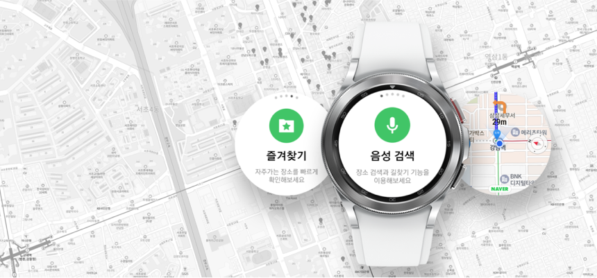

Naver Map, Navigation (Wear OS), is now available on Google playsotre
Sep 14, 2021

We are honored to announce Korea #1 Map, Naver Map, Navigation application for Galaxy Watch4 is now available on Google Playstore. The application can be downloaded from Google Playstore on Galaxy Watch 4 or from Google Playstore on your mobile phone. This application has been
officially approved by Naver Co., Ltd, who owns and operates Naver Map, Navigation service. This is a standalone watch application, so it doesn’t require anything but internet connection. With that, you can search the places you want to go with your voice, choose among various
navigation options, and bookmark important locations for quick access. The main features are: Search via voice or text Map with compass All modes of transportation Turn by turn navigation Favorite places Recent search history Please note that Naver Map, Navigation service is only
available in Korea so this application can be downloaded only in Korea. Galaxy Watch4 is the first Galaxy watch running on Google Wear OS and this application supports any type of Galaxy Watch4. For more information regarding this application, please visit
https://www.tecace.com/navermap_wearos/
What's New
-
TecAce opened a new branch office in Gangnam, Seoul, south korea
TecAce opened another office, TecAce gx, a third branch in Gangnam, Seoul, South Korea, on February 22, 2022. TecAce gx was established by merging with HyongA Soft, a famous educational content development company in South Korea. After 10 years of partnership with HyongA
Soft, TecAce decided to work together with the same vision to grow together.
Read more >
-
TecAce opened a new branch office in Gangnam, Seoul, south korea
TecAce opened another office, TecAce gx, a third branch in Gangnam, Seoul, South Korea, on February 22, 2022. TecAce gx was established by merging with HyongA Soft, a famous educational content development company in South Korea. After 10 years of partnership with HyongA
Soft, TecAce decided to work together with the same vision to grow together.
Read more >
-
TecAce opened a new branch office in Gangnam, Seoul, south korea
TecAce opened another office, TecAce gx, a third branch in Gangnam, Seoul, South Korea, on February 22, 2022. TecAce gx was established by merging with HyongA Soft, a famous educational content development company in South Korea. After 10 years of partnership with HyongA
Soft, TecAce decided to work together with the same vision to grow together.
Read more >